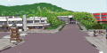
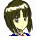
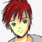
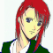
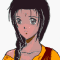
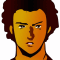
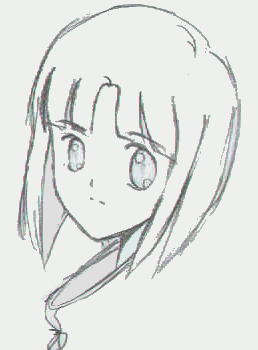

早朝の住宅街。息を吐き、走ってくる少年。それを黄色い声が追い掛ける。

少女 「お兄ちゃぁん！ 待ってってばッ」

少年 「ごめんッ！ 遅刻できないから急ぐッ」少女 「お兄ちゃんってば！ そんなに慌てなくてもスクーター・・・っ、もうっ」
走る少年をゆっくりと追い越すように、車が近付く。運転者は女。

女 「よッ、おはよ。随分と早起きね」少年 「あっ、おはよう、ございます。そのッ、遅刻しそうなんです」
女 「遅刻？ こんな時間に？」
少年 「ぃゃ、その、部活が・・・」
女 「はン？ 軽音がこんなに早くから練習？」
少年 「いえッ、バスケです」
女 「あはは。今度はバスケ？ また、助っ人？ あんたも軽音楽じゃなくて、初めッからスポーツやってりゃ、オリンピック行けたかもね」
少年 「そんなの無理ですよ。今回もたまたま、レギュラーさんが怪我したからで・・・」
女 「ふふン。バスケ部に補欠は山ほどいると思うけど。ま、やるからには頑張ンなさいよ」
少年 「はい」
女 「・・・それと、おいてけぼりにすると、うるさいわよ」
そう言った直後、エアスクーターに乗って少年を追い掛けてくる少女。
少女 「お兄ちゃんってば！ そんなに急ぐんならスクーター乗ってけば・・・」
少年 「トレーニングも兼ねてるんだから、走らない訳にはいかないだろ」
少女 「ちょっとぐらいサボっても、お兄ちゃんなら大丈夫だってば」
少年 「そういう問題じゃないよ」
女 「走りながら、よくそんだけ話せるモンね。ま、遅刻して先輩にどやされないようにね」
女の車が先行する。
少年 「あっ、はいっ。・・・って、うわっ、こんな時間！」
少年、時計を見て慌ててダッシュ。スクーターで追い掛ける少女。
少女 「だからぁ、スクーターに乗れば・・・、もうっ、お兄ちゃぁん！」
バスケットコート。観客席から女生徒たちが歓声を上げる。
 女生徒 「きゃあっ」
女生徒 「きゃあっ」
女生徒 「カッコイ〜〜っ」
 女生徒 「なんで？ あんなに身長差あるのにっ！」
女生徒 「なんで？ あんなに身長差あるのにっ！」
女生徒 「この間も、サッカー部に呼ばれてたじゃん」
女生徒 「あんな可愛い顔で、頭脳明晰にスポーツ万能かァ」
コートのすぐそばに少女。
少女 「お兄ちゃーん」
 女生徒 「アレで、小姑さえいなきゃ、ねえ」
女生徒 「アレで、小姑さえいなきゃ、ねえ」
 女生徒 「あの子にうんざりして諦めたって話は山ほど聞くじゃない？」
女生徒 「あの子にうんざりして諦めたって話は山ほど聞くじゃない？」
女生徒 「でもアレ、妹じゃないんでしょ？」
女生徒 「でも彼、妹としてしか見てないじゃん」
女生徒 「あっちはそうでもないみたいだけど」
女生徒 「うっざ〜」
少女 「頑張ってー！ お兄ちゃーん」
ゴールを決めた後、少女に小さく手を振る少年。少女も答える。
少女 「えへへ・・・」
練習が終わり、顔を洗う少年にヘッドロックをかけるクラスメート。
 不良 「よォッ、相変わらず黄色い声だらけだな」
不良 「よォッ、相変わらず黄色い声だらけだな」
少年 「そんなんじゃないよ」
少女 「そうだよ。そんなんじゃないよ」
不良 「なんてェか、お前。俺が友達じゃなかったら、一番最初にシメてるタイプだぜ」
少年 「なんで？」
不良 「そういうトコ。・・・それはともかく、聞いたか？」
少年 「なに？」
不良 「転校生だってよ」
少年 「へえ。こんな時期に」
不良 「年齢も上らしいし、何か、色々と訳アリみたいだぜ？ チラっと見たけど、綺麗なツラしてたな。随分とスマシてたけど」
少年 「ふうん」
少女 「お兄ちゃんは、そーゆーのに興味ないんですぅ」
不良 「あのなァ。男はみんなスケベなんだよ。コイツだって一緒だよ。なァ、 お 兄 ち ゃ ん」
少年 「それは・・・、その・・・、人並みには」
少女 「一緒にしないでっ」
チャイムの音。教室。教師が転校生を連れて入ってくる。
 先生 「あー、転校生を紹介する」
先生 「あー、転校生を紹介する」

転校生 「・・・よろしくお願いします」
席で、転校生に見とれる少年。
少年 「・・・」
少女 「・・・？ お兄ちゃん？」
先生 「とりあえず、席はその辺にでも座っとけ」転校生 「はい・・・。よろしく」
少年 「あ、あ。こちらこそ。よろしく」
少女 「お兄ちゃんってば・・・」
少年 「あ、うん。なに？」
ホイッスルの音。
バスケットゴールにダンク・シュートを決める少年。
 相手校 「・・・な、なんだ、あのチビ。ちょっと異様じゃないか？」
相手校 「・・・な、なんだ、あのチビ。ちょっと異様じゃないか？」

相手選手 「主将がそう思うなら、まず間違いないと思います。俺らから見ても、スピードもバネも、超高校級ですよ、アレ」
相手校 「あんな選手がいるなんて、聞いてねえぞ・・・。何としても、あの坊ちゃんヅラに痛い目を見せてやるぜ・・・」
ラフプレーで、体当たりまがいにボールを奪われる。
少年 「くっ、乱暴な・・・ッ」
少女 「お、お兄ちゃん！」
バスケットコートに案内される転校生。
女生徒 「あ、始まってる始まってる」
転校生 「バスケットボール？」
女生徒 「見るべきは試合じゃなくて、彼よ。ウチのガッコのアイドルなんだから！ この間もサッカー部の助っ人に呼ばれてて・・・」
転校生 「・・・そう」
女生徒 「あっ、きゃあっ」
転倒している少年に、チームメイトが駆け寄り、審判に抗議する。
 チームメイト 「大丈夫か？ おいっ、審判っ」
チームメイト 「大丈夫か？ おいっ、審判っ」
少年 「大丈夫。すり剥いただけですから」
少女 「お兄ちゃんッ！ これ・・・」
少女が救急箱をもって駆け寄るが、少年はそれを制止する。
少年 「大丈夫だよ。試合再開するよ。さ、コートから出て」
少女 「あ・・・」
少年 「そっちがその気ならッ！ 僕だって遠慮しませんよッ」
少年は表情を険しくして、ボールを簡単に奪い、あっという間にマークを突破し、シュートを決める。
相手校 「な、なにッ？」
ホイッスル。ゴール傍で試合観戦している転校生と女生徒。
女生徒 「ぬ、抜いちゃった・・・」
転校生 「・・・下手したら、１人の方が強そうね」
相手校 「今度は抜かせるかァッ！！」少年 「怒鳴ったって退きませんよッ！」
少年、ダンクシュートを決めかけるが、相手選手にぶつかられ思わずリングをつかむ。相手選手もそのまま少年をつかんだため、ゴールが傾く。
ゴールポストが転倒してくる。
女生徒 「きゃああああぁぁっ」
音とともに、ポスト、相手選手、少年、転校生が倒れている。
少女 「お兄ちゃん！」
少年 「僕は大丈夫。この子の脚がポストに・・・」
転校生 「・・・っ」
ポストの骨組みで脚を打ち付けたらしい。
少女 「こ、これ・・・」
救急箱を差し出す少女。
少年 「いや、保健室に連れてく」
少年が、転校生を抱き上げる。
少女 「あ・・・」
転校生 「！ ちょ、ちょっと！ 歩けるわ！」
少年 「いいから！」
保健室。椅子の上で、脚に湿布と包帯を巻いている転校生。
少年 「ごめんね」
転校生 「謝ることはないわ。わざとやった訳ではないでしょうし、避けそこなったのは私なんだし」
少年 「でも、事故なら許されるものでもないから・・・」
転校生 「・・・試合、良かったの」
少年 「あ・・・、いや、その。良くはないんだけど。もともと、バスケ部の選手って訳でもないから、その、ズルみたいなもので・・・」
転校生 「あんなに巧いのに？」
少年 「いや、その、僕は軽音楽部で、バスケをやってる訳じゃなくて・・・、その、たまたま球技が得意で・・・」
転校生 「・・・そう」
少年 「な、何か気に障った？」
転校生 「別に」
少年 「・・・ごめん」
転校生 「何故謝るの？」
保健室のドアの外。ドアを開けようとする手が止まる。
少年 「わからないけど、何か気に触ることを言ったみたいだから」
会話を聞いた少女が、ドアに伸ばした手を引っ込める。
少女 「・・・あ」
転校生 「そうね。強いて言えばあなた自身かしら。・・・あなたは、何でも出来て、優しいスーパーマンかも知れない」
少年 「そ、そんなんじゃないよ」
転校生 「スーパーマンにはわからないでしょうけど、弱者は、守られるために存在する訳じゃないわ」
少年 「・・・え・・・っ」
転校生 「あなたは、みんなを助けるなのかも知れない。でも、バスケ部の補欠からすれば、勝ちたいより、試合に出たいかも知れない。あなたと違って、本気でバスケをしてるんだから」
少年 「・・・それは・・・、そうだね」
転校生 「普通に試合に挑めば、レギュラー陣が負けた試合かも知れない。でも、あなたを呼んで勝つことが、それほど大事かしら。あなた自身も、いいように利用されているだけに見えるわ。ただ、他人の顔色を窺って・・・」
少年 「・・・そう・・・かも知れない・・・」
転校生 「あなたのことを知りもしないのに、生意気なことを言ってごめんなさい」
少女 「・・・あ・・・何で入れなかったの・・・？」
夕方。校舎玄関。転校生を呼び止めたらしい少女。
転校生 「・・・何か用？」
少女 「お、お兄ちゃんを苛めないで・・・」
転校生 「聞いてたのね。ごめんなさい。でも、苛めた訳じゃないわ。少し、話をしただけよ」
少女 「でもっ」
転校生 「こんなお兄さん想いの妹さんがいるなら、きっと、良いお兄さんなのね。知りもしないのに、勝手なことを言ってごめんなさい」
転校生が、少女に笑顔を向ける。
少女 「・・・あ」

アイキャッチ「Ｇ−ＧＵＩＬＴＹ」
朝、校内で、転校生の背中に声が掛けられる。
少女 「待ってよっ、お兄ちゃんってば！」
少年 「あ、あのさっ」
転校生 「おはよう」
振り返る転校生。
少年 「これ、今度、軽音楽ッ、僕がやるんだ。・・・そのチケット、その・・・、良かったら、来て・・・」
転校生 「・・・ありがとう」
少女 「お、お兄ちゃん・・・」
演奏する少年。不良も一緒にいる。
それを見ている楽しげな少女と、澄まし顔で眺める転校生。
ふと少女が転校生の方を見ると、転校生が優しく笑う。
少女 「いつからか、３人になってた・・・」
遊んだり、話したりする３人。
少女 「お兄ちゃんは、あの人のことが好きで・・・」
色んな風景のフラッシュバック。
少女 「お兄ちゃんは、あたしの空間を用意してくれてるのに」
椅子が並んでいる。少年、空席、転校生の順。
少女 「あたしの、居場所が、ない」
椅子に、少年、少女、転校生。少女が半透明になる。
少女 「あの人も優しくて、いっそ、嫌いになれたら良かった・・・」
転校生と少年が、プレゼントを物色している。
少女 「あの人が開けてくれる空間に、あたしは、いたく、ない」
椅子に、少年、空席、転校生。
少年 「はい。プレゼント」
少年が笑顔で渡すプレゼントを、少女ははたき落とす。
少女 「・・・いらない！」
少年 「ど、どうしたんだよ」
驚く少年。
少女 「あの人が選んだプレゼントなんていらない！」
少女 「おかしいよ、お兄ちゃん。あの人の事ばっかり」
少女 「今まで、他の子だったら、全然そんなふうじゃなかった」
少女 「なんで？ なんでなの？」
少女 「あの人、きっとお兄ちゃんのこと好きじゃない！」
少女 「そんなにあの人が好きなの！？」
少年 「・・・多分、そう・・・だと思う」
少女 「・・・あ」
タイトル
|
− Dreamscape − |
ザンクαのコックピット。
 少女 「あ・・・、お兄ちゃん・・・！」
少女 「あ・・・、お兄ちゃん・・・！」
 アベル 「僕は！ 躊躇なんか！」
アベル 「僕は！ 躊躇なんか！」
少女 「・・・あたし、いらないの？ ・・・いらない子なの？」
アベル 「僕は！ ユーニスを見殺しにした罪を一生背負って！ だから！」
少女 「ここにいちゃ駄目なの？ 居場所が・・・何処にも・・・」
アベル 「・・・ッ！ そんなユーニスの声で！ 僕は！ 僕は絶対に止まらない！ 絶対に！ そんなあなた達を絶対に許さない！」
少女 「お兄ちゃんの・・・、ここに、いても・・・、ねえ」
アベル 「うわああああぁぁぁぁぁっ！」
アベル、少女の乗るザンクαを斬る。
少女のいるコックピットが白い光に包まれる。

 イヴリン 「なに！？ 沈んだの！？ ザンクが！？」
イヴリン 「なに！？ 沈んだの！？ ザンクが！？」
ハインツ 「やったのか！？ アベル！ くっ、コイツっ」
 カイン 「あは。やられちゃった。整備不良のアサルトとお姉さんじゃ、勝ち目ないかなー」
カイン 「あは。やられちゃった。整備不良のアサルトとお姉さんじゃ、勝ち目ないかなー」
 ケネス 「逃がすかッ！」
ケネス 「逃がすかッ！」
カイン 「しつこいよッ」
ケネス 「攻めるだけ攻めて、不利になったら撤退ッてのは虫が良すぎねーか！？」
カイン 「邪魔するなッ！ こっちの目的は達成されたんだ！」
ケネス 「ちッ・・・！」
イヴリン 「一目散に撤退・・・！？ あんなガキさえ使わなきゃ・・・！ 悔しいけどッ！」
ハインツ 「た、助かっ・・・」
アベル 「イヴリンさん！ あなたは！ そんな手を使う人たちに！」
イヴリン 「は・・・、よりにもよって、沈めたのがアベルとはね・・・」
アベル 「くっ・・・！ 逃げないで下さい！ 僕は・・・！ 今ならあなただって殺せるんだ！ 僕は・・・ッ！」
ケネス 「落ち着け、アベル。上出来だ。こっちも撤退するぞ。まだ終わった訳じゃない」
アベル 「はぁっ、はあっ・・・」
オデッセイア。イヴリンに頬を叩かれるカイン。だが、わざと叩かせたのか、口元には微笑。
カイン 「痛いね」
イヴリン 「舐めた真似をした罰よ。ホントの罰は、長官なり艦長なりから貰いなさい」
カイン 「あっはッ。それ、どうかな？」
イヴリン 「どういう意味」
カイン 「これでそろそろ、ダグラスさんの失脚はほぼ確定。僕に懲罰を与える人間、いなくなるから・・・！ おっと、何度も痛いのは勘弁してよね」
イヴリンによる２度目の平手打ちは、カインが手首をつかんで阻止。
イヴリン 「鼻持ちならないガキね」
マトリックス。コックピットを降りたケネスが、シャヒーナの肩を叩く。
ケネス 「シャヒーナ、アベルを頼む」
 シャヒーナ 「ええ。・・・どうしたの？」
シャヒーナ 「ええ。・・・どうしたの？」
ケネス 「ナイーヴなんだよ。知っての通り」
シャヒーナ、コックピットへ上がる。
シャヒーナ 「・・・アベル？」
アベル 「戦闘中に、何度もッ、・・・ユーニスの声が・・・ッ！ 聞こえたんだ・・・ッ！」
シャヒーナ 「・・・そう」
アベル 「だからッまたッ・・・ユーニスを殺したみたいな感触がッ・・・この手に・・・」
シャヒーナ 「大丈夫」
アベル 「こんな事で・・・僕は迷ったりしない！ 僕は・・・」
シャヒーナ 「泣いてもいいのよ。・・・泣けるのは、アベルがまだ正常な証拠だから」
アベル 「う・・・っ、わあっ、わあああぁぁぁっ」
ケーラー 「いい感じに、育ってるね・・・。アベルの感知力ならば、斬ったのが誰だか感じないはずはない。くくっ、あの子をも切り伏せる力・・・、感情をも武器にして・・・、くくっ、くくくっ・・・、エドガー・パウエル・・・。アベルは、どんどんと君に近付くよ・・・。くっくっ・・・」

ナレーション 「戦場で聴いた声は、夢なのか真なのか。アベルは二度も妹を殺した悪夢にさいなまれる。そしてその頃、セグメントは新たなる武器を手に、Ｇの攻略に挑んでくるのだった。次回、『撃墜す』 Ｇの鼓動が、今目覚める」